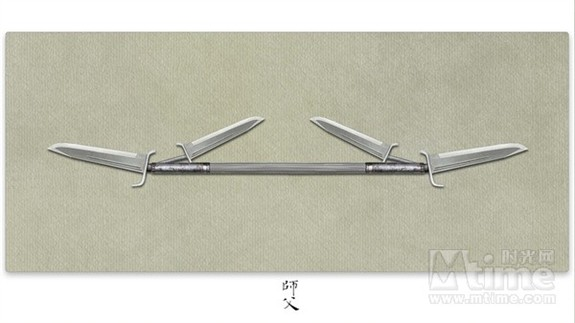
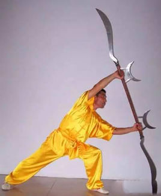
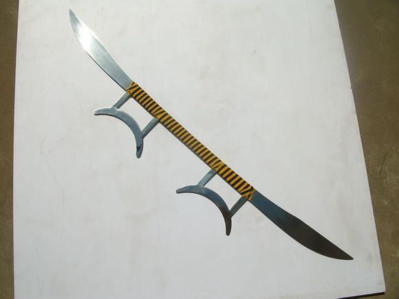
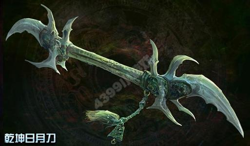

十： 乾坤日月刀
《师父》里廖凡手持的那把由几把蝴蝶刀组成、形象怪异的长兵器叫做乾坤日月刀。该武器是具有代表的器械之一，电影中师父陈识用乾坤日月刀，是将八卦刀具组合成该器械的样子，与真正的乾坤日月刀很像，使用方法同样为双手持中段的格拦、推架等。

乾坤日月刀是流传在民间的一种奇异兵器。全长六尺（2米），两端各有相同长度的月牙形刀。刀背上部各有三个小铁环，舞动起来沙沙作响。刀柄为坚硬木料所制，握手处在刀柄中段，上扎彩带，并有两个突出的月牙形利刀。利刃后为握手处。使练时，两手均在月牙形利刃下握住刀柄。握法有左阴右阳、右阴左阳和双阴法三种。

此兵器前后可用，变化多端。主要用法有：前后扎刀、正反扎刀、斩劈刀、上挑刀、横扫刀、舞花刀、上下截刀、里外绞刀、撩挂刀、云拨刀、格拦刀、推架刀等。

